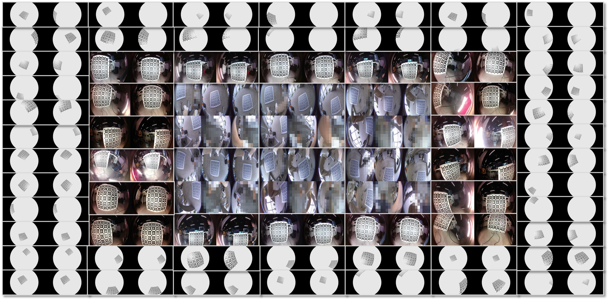
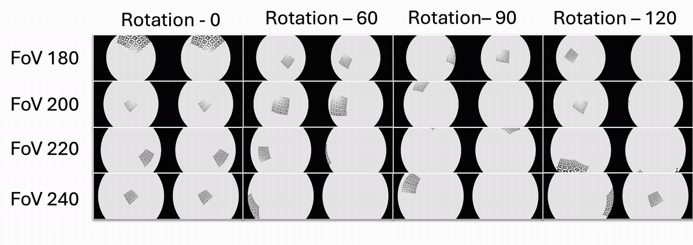
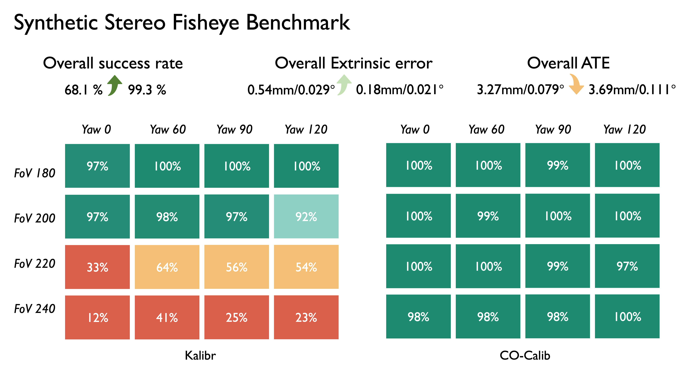

Robust Multi-Fisheye Calibration
CO-Calib
Observation Quality Matters: Robust Multi-Fisheye Calibration via Failure-Oriented Analysis
- 99.3%
- Synthetic SR
- 3.69mm / 0.111°
- Synthetic ATE
- 25/25
- Real-world stereo SR
- 10/10
- Real-world Hex-Fisheye SR
Failure-Oriented Analysis
Observations should guide optimization, not merely fill the image.
CO-Calib shows that multi-fisheye calibration failures are governed by whether observations make intrinsic initialization well conditioned. Limited radial span couples focal scale with fisheye projection-shape parameters, producing ambiguous updates. Our detector and error-analysis-guided selector construct frames that provide stable, separable constraints for the existing optimization backend.
Synthetic Dataset
1,600 sequences of synthetic fisheye stereo data
The benchmark spans wide lens distortion and stereo arrangement diversity by combining multiple fields of view and yaw rotations, yielding controlled calibration sequences for failure-oriented analysis.

Results
Higher Success Rate on Synthetic Stereo Fisheye Benchmark
Across the 4 FoV x 4 yaw synthetic stereo benchmark, CO-Calib keeps calibration success high in wide-FoV regimes where Kalibr degrades, raising overall success from 68.1% to 99.3%.

Real-world experiments
Two rig-level views for comparing calibration outcomes
CO-Calib achieves higher calibration success rates and more consistent extrinsic estimates on both real-world Hex-Fisheye and stereo fisheye rigs, producing stable results where standard pipelines become unreliable.


Citation
BibTeX
@article{liu2026observation,
title={Observation Quality Matters: Robust Multi-Fisheye Calibration via Failure-Oriented Analysis},
author={Liu, Peize and Tong, Zhe and Feng, Chen and Shen, Shaojie},
journal={IEEE Robotics and Automation Letters},
year={2026}
}